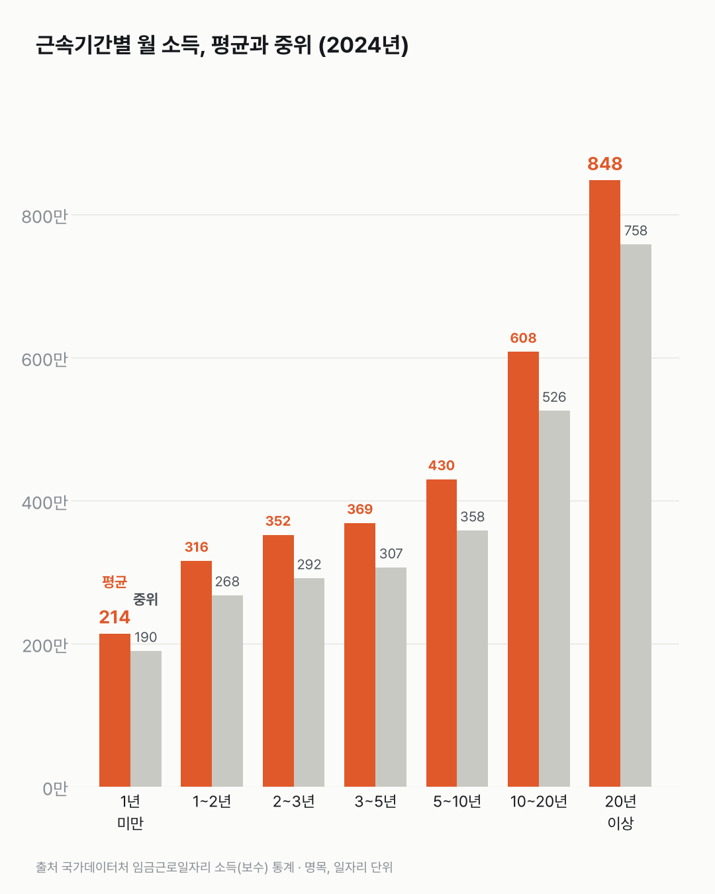
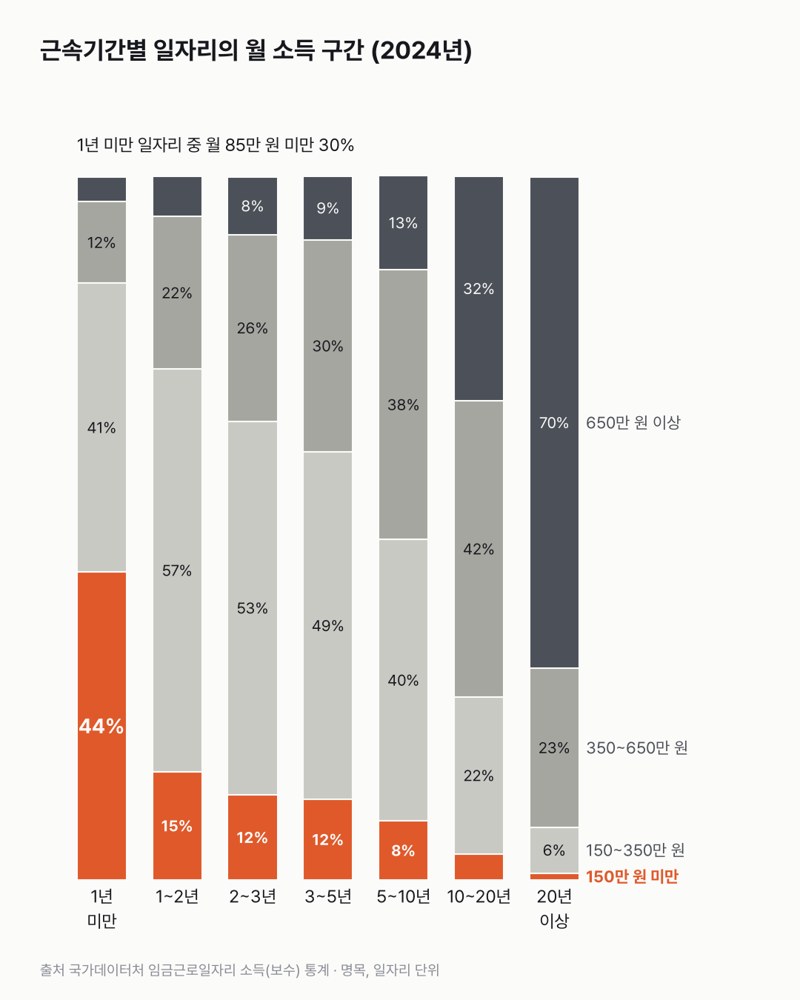

20년 다닌 일자리 월소득, 1년 안 된 자리의 네 배예요
오래 다닐수록 소득이 늘지만, 늘어나는 폭은 해마다 같지 않아요. 3~5년에서 5~10년으로 가면 61만 원, 5~10년에서 10~20년으로 가면 178만 원이 늘어요.

3줄 요약
- 2024년 한 직장에 20년 이상 다닌 일자리의 월평균 소득은 848만 원, 1년 미만은 214만 원이에요.
- 둘의 차이는 평균으로 2016년 4.4배에서 2024년 4.0배로 줄었어요.
- 다닌 지 1년이 안 된 일자리는 30%가 월 85만 원이 안 돼요.
190만 원. 막 들어간 일자리들을 소득순으로 줄 세웠을 때 가운데에 오는 값이에요. 근속 1년 미만 일자리의 2024년 중위소득이고, 2016년엔 130만 원이었어요.
같은 기간 20년 이상 일자리의 중위소득은 644만 원에서 758만 원이 됐어요. 1년 미만은 46%, 20년 이상은 18% 올랐어요. 그래서 둘의 차이는 중위소득으로 4.9배에서 4.0배, 평균으로 4.4배에서 4.0배로 줄었어요.
2024년 평균으로 줄 세우면 근속이 길수록 많아요. 1년 미만 214만 원, 1~2년 316만 원, 3~5년 369만 원, 5~10년 430만 원, 10~20년 608만 원, 20년 이상 848만 원이에요.
계산해 보니 차이가 분명했어요. 3~5년에서 5~10년으로 가면 61만 원이 늘지만, 5~10년에서 10~20년으로 가면 178만 원이 늘어요.
1년 미만 일자리 안은 넓게 퍼져 있어요. 30%가 월 85만 원 미만이고, 150만 원 미만까지 합하면 44%예요. 20년 이상은 70%가 월 650만 원 이상이에요.


같은 사람을 따라간 숫자는 아니에요. 지금 1년 미만 칸에 있는 사람은 20년 뒤 어느 칸에 서 있을까요?
이 숫자는 어디서 왔나요
출처
기준일 2016~2024년 각 연도예요.
국가데이터처임금근로일자리 소득(보수) 통계
- 근속기간별 소득KOSIS DT_1EP_2007원본 보기
근속기간 7개 구간별 월평균·중위소득과 소득 구간 분포, 2016~2024년
어떻게 셌나요
- 설문이 아니에요. 행정자료로 만든 통계이고, 사람 대신 일자리 하나하나를 세요.
- 그해 일자리를 근속기간 7개 구간으로 나눠 월평균 소득과 중위소득(한 줄로 세웠을 때 가운데 값)을 봤어요.
- 금액은 월평균, 물가를 빼지 않은 그해 돈(만 원)이에요.
한계 5가지
이 데이터로 말할 수 없는 것
- 같은 사람을 따라간 것이 아니에요. "오래 다니면 이만큼 오른다"는 뜻은 아니고, "그해 근속 구간별 일자리 평균"이에요.
- 근속이 길수록 다른 조건도 달라요. 나이가 많고, 대기업·공공기관 비중이 높을 수 있어요. 근속 자체의 효과를 가를 수 없어요.
- 1년 미만에는 다양한 일자리가 섞여 있어요. 월 85만 원 미만이 30%인 것은 일한 기간이나 시간이 짧은 일자리 때문일 수 있지만 확인하지 못했어요.
- 이직과의 관계는 이 표로 알 수 없어요. 앞선 글(이직하면 월급이 오를까)에서 본 것처럼 옮긴 사람의 임금 변화는 다른 통계로 봐야 해요.
- 원인은 말하지 않아요. 이직을 권하거나 말리는 글이 아니에요.
새 글 나오면 받아 보기
피드 리더 앱에 이 사이트 주소를 한 번 넣어 두면, 새 글이 올라올 때 앱에 떠요. 가입이나 메일 주소는 필요 없어요.
받는 법 보기
- 피드 리더 앱을 하나 골라요. 새 글을 모아 보여 주는 앱이에요. 예를 들면 Feedly나 Inoreader가 있어요. 둘 다 무료고 웹·휴대폰에서 써요.
- 앱에서 '구독 추가'(+)를 누르고 아래 주소를 붙여 넣어요.
- 끝이에요. 새 글이 올라오면 앱 목록에 떠요.
https://protofu.github.io/opendata-insight/feed.xmlFeedly를 쓴다면 여기를 눌러 바로 추가할 수도 있어요.